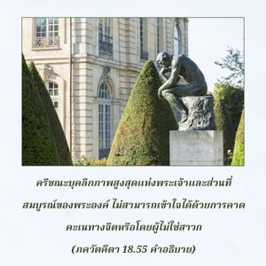
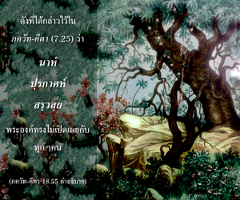

บุคคลสามารถเข้าใจตามความเป็นจริงว่า ข้าคือองค์ภควาน ก็ด้วยการอุทิศตนเสียสละรับใช้เท่านั้น และเมื่อมาอยู่ในจิตสำนึกแห่งข้าโดยสมบูรณ์ด้วยการอุทิศตนเสียสละเช่นนี้ เขาจะสามารถเข้าไปในอาณาจักรแห่งองค์ภควาน


องค์กฺฤษฺณบุคลิกภาพสูงสุดแห่งพระเจ้า และส่วนที่สมบูรณ์ของพระองค์ไม่สามารถที่จะเข้าใจได้ด้วยการคาดคะเนทางจิต หรือโดยผู้ไม่ใช่สาวก หากผู้ใดปรารถนาจะเข้าใจองค์ภควานฺ เขาต้องปฏิบัติการอุทิศตนเสียสละรับใช้ที่บริสุทธิ์ ภายใต้การชี้นำของสาวกผู้บริสุทธิ์ ไม่เช่นนั้นความจริงเกี่ยวกับองค์ภควานฺจะถูกซ่อนเร้นอยู่เสมอ ดังที่ได้กล่าวไว้ใน ภควัท-คีตา (7.25) ว่า นาหํ ปฺรกาศห์ สรฺวสฺย พระองค์ทรงไม่เปิดเผยกับทุกๆ คน ไม่มีผู้ใดสามารถเข้าใจองค์ภควานฺด้วยการมาเป็นนักวิชาการ ผู้คงแก่เรียน หรือเป็นนักคาดคะเนทางจิต ผู้ที่ปฏิบัติในกฺฤษฺณจิตสำนึกและอุทิศตนเสียสละรับใช้จริงๆ เท่านั้นจึงสามารถเข้าใจว่าองค์กฺฤษฺณคือใคร แม้ปริญญาบัตรจากมหาวิทยาลัยอะไรก็ช่วยไม่ได้
ผู้มีความชำนาญมากในศาสตร์แห่งองค์กฺฤษฺณมีสิทธิ์ที่จะเข้าไปในอาณาจักรทิพย์ หรือพระตำหนักของพระองค์ การกลายเป็น พฺรหฺมนฺ ไม่ได้หมายความว่าสูญเสียบุคลิกลักษณะของตนเอง ตราบใดที่การอุทิศตนเสียสละรับใช้มีอยู่จะต้องมีองค์ภควานฺ มีสาวก และมีวิธีการอุทิศตนเสียสละรับใช้ ความรู้เช่นนี้ไม่สูญหายแม้หลังจากหลุดพ้นไปแล้ว การหลุดพ้นหมายถึงเป็นอิสระจากแนวคิดชีวิตทางวัตถุ ในชีวิตทิพย์มีข้อแตกต่างเช่นเดียวกันและมีความเป็นปัจเจกบุคคลเช่นเดียวกัน แต่อยู่ในกฺฤษฺณจิตสำนึกที่บริสุทธิ์ เราไม่ควรคิดผิดๆ กับคำว่า วิศเต หรือ “เข้ามาในข้า” ว่าไปสนับสนุนทฤษฏีของผู้ที่เชื่อความเป็นหนึ่งเดียวกันว่า เราจะกลายมาเป็นเนื้อเดียวกันกับ พฺรหฺมนฺ อันไร้รูปลักษณ์ มันไม่ใช่คำว่า วิศเต หมายความว่าเขาสามารถเข้าไปในพระตำหนักขององค์ภควานฺในความเป็นปัจเจกของตนเองเพื่อปฏิบัติอย่างใกล้ชิด และถวายการรับใช้แด่พระองค์ ตัวอย่างเช่น นกสีเขียวไปอยู่บนต้นไม้สีเขียว ไม่ใช่เพื่อกลายมาเป็นหนึ่งเดียวกับต้นไม้ แต่เพื่อรื่นเริงกับผลไม้บนต้น พวกไม่เชื่อในรูปลักษณ์โดยทั่วไปให้ตัวอย่างว่า แม่น้ำไหลลงไปในมหาสมุทรและกลืนหายไป เช่นนี้อาจเป็นเหตุแห่งความสุขสำหรับผู้ไม่เชื่อในรูปลักษณ์ แต่ผู้เชื่อในรูปลักษณ์จะรักษาความเป็นปัจเจกบุคคลของตนเองเหมือนกับสัตว์น้ำในมหาสมุทร เราจะพบสิ่งมีชีวิตมากมายภายใต้มหาสมุทรหากเราดำลึกลงไป ความคุ้นเคยกับผิวน้ำของมหาสมุทรไม่เพียงพอ เราจะต้องมีความรู้เกี่ยวกับชีวิตสัตว์น้ำในส่วนลึกของมหาสมุทรอย่างสมบูรณ์ด้วย
ด้วยการอุทิศตนเสียสละรับใช้ที่บริสุทธิ์สาวกจึงสามารถเข้าใจคุณลักษณะทิพย์ และความมั่งคั่งขององค์ภควานฺตามความเป็นจริง ดังที่ได้กล่าวไว้ในบทที่สิบเอ็ดว่า ด้วยการอุทิศตนเสียสละรับใช้เท่านั้นที่เราสามารถเข้าใจ ได้ยืนยันไว้ตรงนี้เช่นเดียวกันว่าเราสามารถเข้าใจบุคลิกภาพสูงสุดแห่งพระเจ้าได้ด้วยการอุทิศตนเสียสละรับใช้ แล้วจึงเข้าไปในอาณาจักรของพระองค์
หลังจากบรรลุถึงระดับ พฺรหฺม-ภูต ที่เป็นอิสระจากแนวคิดทางวัตถุ การอุทิศตนเสียสละรับใช้เริ่มต้นจากการสดับฟังเกี่ยวกับองค์ภควานฺเมื่อสดับฟังเกี่ยวกับพระองค์ ระดับ พฺรหฺม-ภูต ก็จะพัฒนาโดยปริยายและมลทินทางวัตถุ เช่น ความโลภและราคะ เพื่อรื่นเริงทางประสาทสัมผัสจะเลือนหายไป ขณะที่ราคะและความปรารถนาเลือนหายไปจากหัวใจของสาวกท่านจะยึดมั่นกับการรับใช้พระองค์มากยิ่งขึ้น และจากการยึดมั่นเช่นนี้ทำให้เป็นอิสระจากมลทินทางวัตถุ ชีวิตในระดับนั้นจึงสามารถเข้าใจองค์ภควานฺ นี่คือข้อความจาก ศฺรีมทฺ-ภาควตมฺ หลังจากหลุดพ้นแล้ววิธีแห่ง ภกฺติ หรือการอุทิศตนเสียสละรับใช้ทิพย์จะดำเนินต่อไป เวทานฺต-สูตฺร (4.1.12) ยืนยันดังนี้ อา-ปฺรายณาตฺ ตตฺราปิ หิ ทฺฤษฺฏมฺ หมายความว่าหลังจากหลุดพ้นแล้ววิธีแห่งการอุทิศตนเสียสละรับใช้จะดำเนินต่อไป ใน ศฺรีมทฺ-ภาควตมฺ ความหลุดพ้นแห่งการอุทิศตนเสียสละที่แท้จริงนิยามว่า สิ่งมีชีวิตกลับคืนมาสู่บุคลิกลักษณะของตนเองเหมือนดังเดิม สถานภาพเดิมแท้ได้อธิบายไว้แล้วว่า ทุกๆชีวิตเป็นละอองอณูขององค์ภควานฺ ดังนั้นสถานภาพเดิมแท้คือการรับใช้ หลังจากหลุดพ้นไปแล้วการรับใช้เช่นนี้ไม่มีวันหยุดลง อันที่จริงการหลุดพ้นคือเป็นอิสระจากแนวคิดชีวิตที่ผิด